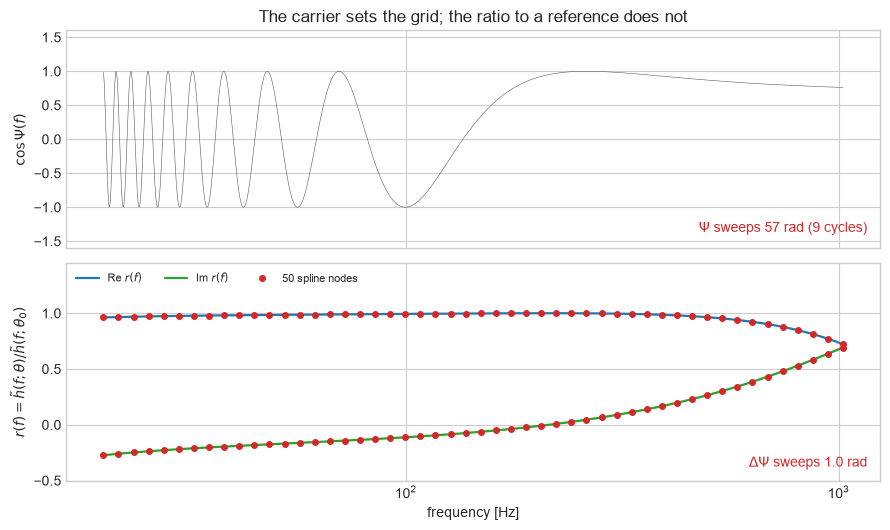
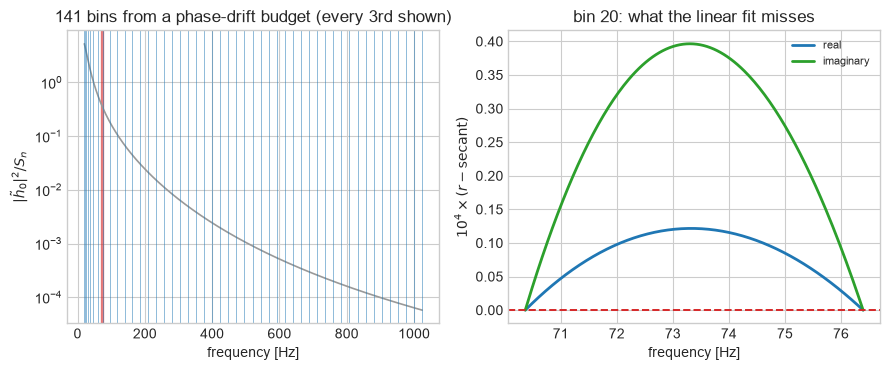
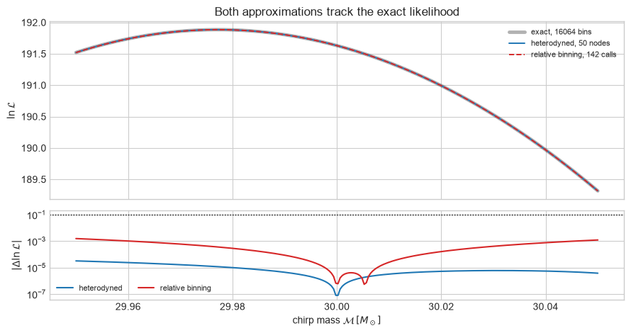
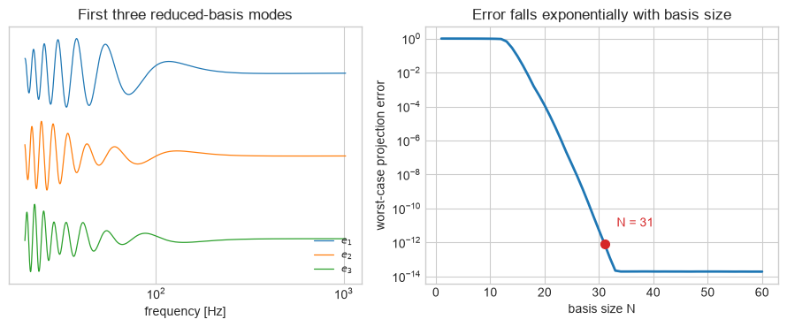
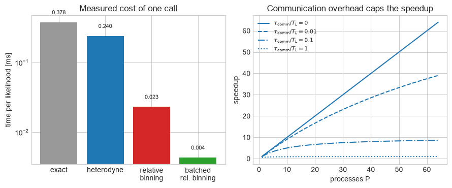

Part 4: Fast likelihoods#
FQCP 2026 · Bayesian parameter estimation for gravitational-wave sources
Goal and route#
Make one log-likelihood call one hundred times cheaper without changing the answer, and measure the error you accept in exchange.
Live route
Sections 1–4: the cost of an exact call, heterodyning, relative binning, and the accuracy check that decides whether either is safe. Sections 5–7 are extension material.
Boundary: The waveform here is a leading-order stationary-phase inspiral with an analytic toy PSD, which keeps every step readable. Production implementations (bilby.gw.likelihood.RelativeBinningGravitationalWaveLikelihood, ROQGravitationalWaveTransientLikelihood) carry the same algebra plus the bookkeeping this notebook omits.
1. Where the time goes#
A sampler asks for \(\ln\mathcal{L}\) between \(10^6\) and \(10^8\) times. Each call evaluates a waveform on every frequency bin and forms two noise-weighted inner products,
So the wall-clock cost of a run is a product of three things:
The frequency resolution is fixed by the segment duration, \(\Delta f = 1/T\), so \(N_f = T\,(f_{\rm high}-f_{\rm low})\) — a 16-second segment analysed to 1024 Hz already needs 16064 bins, and a long BNS segment needs half a million.
This notebook attacks each factor in turn. Sections 2 and 3 cut \(N_f\), Section 5 cuts \(c_{\rm waveform}\), and Section 6 deals with \(P\). Nothing here touches \(N_{\rm calls}\); that is the sampler’s problem.
Start with the exact likelihood that everything else is measured against.
import time
import numpy as np
import matplotlib.pyplot as plt
from scipy.interpolate import CubicSpline
rng = np.random.default_rng(20260817)
plt.style.use("seaborn-v0_8-whitegrid")
MSUN_SECONDS = 4.9254909476412675e-6
F_LOW, F_HIGH, DF = 20.0, 1024.0, 1.0 / 16.0
frequency = np.arange(F_LOW, F_HIGH, DF)
psd = 1e-46 * ((20.0 / frequency) ** 4 + 2.0 + (frequency / 200.0) ** 2)
weight = 4.0 * DF / psd
def inspiral_phase(f, chirp_mass, time_shift, phase_shift):
"""Leading-order stationary-phase inspiral phase."""
mass_seconds = chirp_mass * MSUN_SECONDS
return (
2 * np.pi * f * time_shift
- phase_shift
- np.pi / 4
+ (3 / 128) * (np.pi * mass_seconds * f) ** (-5 / 3)
)
def waveform(f, chirp_mass=30.0, time_shift=0.0, phase_shift=0.0, amplitude=1.0):
return (
amplitude
* 1e-23
* f ** (-7 / 6)
* np.exp(1j * inspiral_phase(f, chirp_mass, time_shift, phase_shift))
)
# One injection at SNR 20, and the reference point every approximation expands about.
reference = dict(chirp_mass=30.0, time_shift=0.0, phase_shift=0.0, amplitude=1.0)
reference["amplitude"] = 20.0 / np.sqrt(
np.sum(weight * np.abs(waveform(frequency, **reference)) ** 2)
)
reference_waveform = waveform(frequency, **reference)
noise = (
rng.normal(size=frequency.size) + 1j * rng.normal(size=frequency.size)
) * np.sqrt(psd / (8 * DF))
data = reference_waveform + noise
def exact_log_likelihood(parameters):
model = waveform(frequency, **parameters)
return np.sum(weight * data * model.conj()).real - 0.5 * np.sum(
weight * np.abs(model) ** 2
)
trial = dict(
chirp_mass=30.03,
time_shift=1.5e-4,
phase_shift=0.2,
amplitude=reference["amplitude"],
)
start = time.perf_counter()
for _ in range(200):
exact_log_likelihood(trial)
exact_cost = (time.perf_counter() - start) / 200
print("frequency bins:", frequency.size)
print(
"optimal SNR:",
round(float(np.sqrt(np.sum(weight * np.abs(reference_waveform) ** 2))), 2),
)
print("lnL at the reference:", round(exact_log_likelihood(reference), 3))
print(f"exact call: {1e3 * exact_cost:.3f} ms")
print(f"10^7 calls on one core: {1e7 * exact_cost / 3600:.1f} hours")
frequency bins: 16064
optimal SNR: 20.0
lnL at the reference: 191.631
exact call: 0.378 ms
10^7 calls on one core: 1.0 hours
2. Heterodyning: divide out the carrier#
The waveform is not hard to represent; its carrier phase is. Everything in \(\tilde h(f)\) that forces a fine grid is the rapidly winding \(\Psi(f)\), and two nearby waveforms share almost all of it. Factor any \(\theta\) against a fixed reference \(\theta_0\),
The exponent is now a difference of phases. For \(\theta\) within a few standard deviations of the peak it moves by order one radian across the whole band, so \(r\) is smooth: evaluate it at a few dozen nodes, spline it onto the full grid, and multiply by the reference waveform, which was computed once.
The figure below makes the contrast concrete. The \(30\,M_\odot\) binary used here turns through 9 cycles between 20 Hz and 1 kHz; a \(1.4+1.4\,M_\odot\) binary from the same starting frequency turns through more than \(10^{4}\) radians, which is why heterodyning matters most exactly where the analysis is most expensive.
nodes = np.geomspace(F_LOW, F_HIGH, 50)
reference_at_nodes = waveform(nodes, **reference)
def heterodyne_log_likelihood(parameters):
ratio_at_nodes = waveform(nodes, **parameters) / reference_at_nodes
model = reference_waveform * CubicSpline(nodes, ratio_at_nodes)(frequency)
return np.sum(weight * data * model.conj()).real - 0.5 * np.sum(
weight * np.abs(model) ** 2
)
carrier = np.cos(inspiral_phase(frequency, 30.0, 0.0, 0.0))
trial_ratio = waveform(frequency, **trial) / reference_waveform
node_ratio = waveform(nodes, **trial) / reference_at_nodes
spline_ratio = CubicSpline(nodes, node_ratio)(frequency)
carrier_swing = np.ptp(inspiral_phase(frequency, 30.0, 0.0, 0.0))
residual_swing = np.ptp(np.unwrap(np.angle(trial_ratio)))
fig, axes = plt.subplots(2, 1, figsize=(9, 5.4), sharex=True)
axes[0].plot(frequency, carrier, color="0.35", lw=0.4)
axes[0].set(
ylabel=r"$\cos\Psi(f)$",
ylim=(-1.6, 1.6),
title="The carrier sets the grid; the ratio to a reference does not",
)
axes[0].text(
0.985,
0.07,
rf"$\Psi$ sweeps {carrier_swing:.0f} rad ({carrier_swing / (2 * np.pi):.0f} cycles)",
transform=axes[0].transAxes,
ha="right",
color="C3",
)
axes[1].plot(frequency, trial_ratio.real, color="C0", lw=1.6, label=r"Re $r(f)$")
axes[1].plot(frequency, trial_ratio.imag, color="C2", lw=1.6, label=r"Im $r(f)$")
axes[1].plot(nodes, node_ratio.real, "o", color="C3", ms=4, label="50 spline nodes")
axes[1].plot(nodes, node_ratio.imag, "o", color="C3", ms=4)
axes[1].set(
xlabel="frequency [Hz]",
ylim=(-0.5, 1.45),
xscale="log",
ylabel=r"$r(f)=\tilde h(f;\theta)/\tilde h(f;\theta_0)$",
)
axes[1].text(
0.985,
0.06,
rf"$\Delta\Psi$ sweeps {residual_swing:.1f} rad",
transform=axes[1].transAxes,
ha="right",
color="C3",
)
axes[1].legend(loc="upper left", fontsize=8, ncol=3)
fig.tight_layout()
plt.show()
print(f"max |r - spline(r)|: {np.abs(trial_ratio - spline_ratio).max():.1e}")
print(f"exact lnL = {exact_log_likelihood(trial):.5f}")
print(f"heterodyned lnL = {heterodyne_log_likelihood(trial):.5f}")

max |r - spline(r)|: 6.9e-06
exact lnL = 182.03894
heterodyned lnL = 182.03894
Expected output — open this if your cell has not run yet

3. Relative binning: do the frequency sum in advance#
Heterodyning still forms the inner products over all 16064 bins. Relative binning removes that too. Partition the band into bins with edges \(f_b\) and midpoints \(f_{m,b}\), and expand the same ratio to first order inside each bin,
Substituting into the inner products, every sum over frequency splits into a piece that depends only on \((d,\tilde h_0,S_n)\) and a piece that depends only on the two coefficients. The first piece is the summary data: four arrays of length \(N_b\), computed once,
The likelihood then costs \(N_b\) terms instead of \(N_f\):
The waveform is now only ever called at the \(N_b+1\) bin edges.
Choosing the bins. A bin is narrow enough when the residual phase \(\Delta\Psi=\Psi(\theta)-\Psi(\theta_0)\) drifts by less than a tolerance across it, for the worst \(\theta\) in the prior. Measuring that drift directly over the corners of the prior box is the most explicit way to say it, and produces bins that are sub-hertz at 20 Hz and several hertz near 1 kHz. The right-hand panel shows what the straight line inside a bin actually misses: a residual of a few parts in \(10^5\), with the parabolic shape of the first neglected term.
PRIOR_CORNERS = [
(30.0 + delta_mass, delta_time, delta_phase)
for delta_mass in (-0.05, 0.05)
for delta_time in (-2e-4, 2e-4)
for delta_phase in (-0.3, 0.3)
]
def bin_edges(tolerance=0.01, n_grid=4000):
"""Edges such that the residual phase drifts < `tolerance` rad per bin."""
grid = np.linspace(F_LOW, F_HIGH, n_grid)
residual = np.array(
[
inspiral_phase(grid, *corner) - inspiral_phase(grid, 30.0, 0.0, 0.0)
for corner in PRIOR_CORNERS
]
)
drift = np.abs(np.gradient(residual, grid, axis=1)).max(axis=0)
budget = np.concatenate([[0.0], np.cumsum(drift[1:] * np.diff(grid))])
n_bins = max(int(budget[-1] / tolerance), 1)
return np.interp(np.linspace(0.0, budget[-1], n_bins + 1), budget, grid)
edges = bin_edges()
start_index = np.searchsorted(frequency, edges)
start_index[-1] = frequency.size
midpoint = 0.5 * (edges[1:] + edges[:-1])
offset = frequency - np.repeat(midpoint, np.diff(start_index))
bin_sum = lambda values: np.add.reduceat(values, start_index[:-1])
# Summary data: four arrays of length N_b, computed once.
A0 = bin_sum(weight * data * reference_waveform.conj())
A1 = bin_sum(weight * data * reference_waveform.conj() * offset)
B0 = bin_sum(weight * np.abs(reference_waveform) ** 2)
B1 = bin_sum(weight * np.abs(reference_waveform) ** 2 * offset)
def binned_log_likelihood(parameters):
ratio = waveform(edges, **parameters) / waveform(edges, **reference)
r0 = 0.5 * (ratio[1:] + ratio[:-1])
r1 = (ratio[1:] - ratio[:-1]) / np.diff(edges)
data_model = np.sum(A0 * r0.conj() + A1 * r1.conj()).real
model_model = np.sum(B0 * np.abs(r0) ** 2 + 2 * B1 * (r0 * r1.conj()).real)
return data_model - 0.5 * model_model
show = 20
zoom = np.linspace(edges[show], edges[show + 1], 200)
ends = edges[show : show + 2]
zoom_ratio = waveform(zoom, **trial) / waveform(zoom, **reference)
end_ratio = waveform(ends, **trial) / waveform(ends, **reference)
secant = end_ratio[0] + (end_ratio[1] - end_ratio[0]) * (zoom - ends[0]) / (
ends[1] - ends[0]
)
fig, axes = plt.subplots(1, 2, figsize=(9, 3.8))
axes[0].semilogy(frequency, np.abs(reference_waveform) ** 2 / psd, color="0.6", lw=1.2)
for edge in edges[::3]:
axes[0].axvline(edge, color="C0", lw=0.5, alpha=0.7)
axes[0].axvspan(edges[show], edges[show + 1], color="C3", alpha=0.5)
axes[0].set(
xlabel="frequency [Hz]",
ylabel=r"$|\tilde h_0|^2/S_n$",
title=f"{edges.size - 1} bins from a phase-drift budget (every 3rd shown)",
)
axes[1].plot(zoom, 1e4 * (zoom_ratio - secant).real, color="C0", lw=2, label="real")
axes[1].plot(
zoom, 1e4 * (zoom_ratio - secant).imag, color="C2", lw=2, label="imaginary"
)
axes[1].axhline(0, color="C3", ls="--", lw=1.4)
axes[1].set(
xlabel="frequency [Hz]",
ylabel=r"$10^4\times(r-\mathrm{secant})$",
title=f"bin {show}: what the linear fit misses",
)
axes[1].legend(fontsize=8)
fig.tight_layout()
plt.show()
start = time.perf_counter()
for _ in range(200):
binned_log_likelihood(trial)
binned_cost = (time.perf_counter() - start) / 200
print(f"bins: {edges.size - 1}")
print(f"waveform evaluations per call: {frequency.size} -> {edges.size}")
print(f"exact {1e3 * exact_cost:.3f} ms relative binning {1e3 * binned_cost:.3f} ms")
print(f"speedup: {exact_cost / binned_cost:.0f}x")

bins: 141
waveform evaluations per call: 16064 -> 142
exact 0.378 ms relative binning 0.023 ms
speedup: 16x
Expected output — open this if your cell has not run yet

4. The check that decides whether you may use them#
A speedup is only a speedup if the posterior is unchanged. The honest test is not agreement at the reference point — both methods are exact there by construction — but agreement across the region the sampler actually explores.
A useful working threshold is \(|\Delta\ln\mathcal{L}|\lesssim0.1\) over the bulk of the posterior; below that the induced change in the posterior is smaller than its own Monte Carlo noise. Both methods clear it here by two orders of magnitude.
scan = np.linspace(29.95, 30.05, 240)
def scan_likelihood(function):
return np.array([function(dict(reference, chirp_mass=mass)) for mass in scan])
exact_scan = scan_likelihood(exact_log_likelihood)
heterodyne_scan = scan_likelihood(heterodyne_log_likelihood)
binned_scan = scan_likelihood(binned_log_likelihood)
fig, axes = plt.subplots(
2, 1, figsize=(9, 4.8), sharex=True, gridspec_kw=dict(height_ratios=[2, 1])
)
axes[0].plot(
scan,
exact_scan,
color="k",
lw=3.5,
alpha=0.3,
label=f"exact, {frequency.size} bins",
)
axes[0].plot(
scan, heterodyne_scan, color="C0", lw=1.4, label=f"heterodyned, {nodes.size} nodes"
)
axes[0].plot(
scan,
binned_scan,
color="C3",
lw=1.4,
ls="--",
label=f"relative binning, {edges.size} calls",
)
axes[0].set(
ylabel=r"$\ln\mathcal{L}$", title="Both approximations track the exact likelihood"
)
axes[0].legend(fontsize=8)
axes[1].semilogy(
scan, np.abs(heterodyne_scan - exact_scan), color="C0", label="heterodyned"
)
axes[1].semilogy(
scan, np.abs(binned_scan - exact_scan), color="C3", label="relative binning"
)
axes[1].axhline(0.1, color="k", ls=":", lw=1)
axes[1].set(
xlabel=r"chirp mass $\mathcal{M}\,[M_\odot]$",
ylabel=r"$|\Delta\ln\mathcal{L}|$",
)
axes[1].legend(fontsize=8, ncol=2)
fig.tight_layout()
plt.show()
print(f"worst heterodyne error: {np.abs(heterodyne_scan - exact_scan).max():.2e}")
print(f"worst relative-binning error: {np.abs(binned_scan - exact_scan).max():.2e}")

worst heterodyne error: 3.24e-05
worst relative-binning error: 1.57e-03
Expected output — open this if your cell has not run yet

5. Extension: reduced-order modelling#
Sections 2 and 3 cut \(N_f\). This one cuts \(c_{\rm waveform}\) — the cost of producing the waveform at all — and it is the factor that dominates when the model is an expensive numerical-relativity surrogate or an EOB waveform solved by ODE integration.
Waveforms at nearby parameters are smooth deformations of one another, so the family \(\{\tilde h(\cdot;\theta):\theta\in\Theta\}\) lies close to a low-dimensional subspace whose approximation error falls exponentially:
An SVD of a training set gives the basis \(\{e_i\}\), but that alone is not yet a speedup: computing \(c_i=\langle e_i\mid \tilde h(\theta)\rangle\) still needs the full grid. The second half of the trick is the empirical interpolant — choose \(N\) frequencies \(F_j\) greedily and solve the \(N\times N\) system
with \(\mathbf{A}^{-1}\) precomputed. The expensive model is then called at \(N\) frequencies only.
The same idea applied to the likelihood integral rather than the waveform is the reduced-order quadrature (ROQ) used in production LVK analyses.
# Offline: a basis from the SVD of a training set.
training = np.linspace(20.0, 40.0, 200)
bank = np.array([waveform(frequency, chirp_mass=mass) for mass in training])
bank /= np.linalg.norm(bank, axis=1, keepdims=True)
all_modes = np.linalg.svd(bank, full_matrices=False)[2]
def projection_error(n):
projected = (bank @ all_modes[:n].conj().T) @ all_modes[:n]
return np.linalg.norm(bank - projected, axis=1).max()
sizes = np.arange(1, 61)
errors = np.array([projection_error(n) for n in sizes])
n_basis = int(sizes[errors < 1e-12][0])
basis = all_modes[:n_basis]
# Offline: greedy empirical-interpolation nodes, then one N x N inverse.
def empirical_nodes(basis):
chosen = [int(np.argmax(np.abs(basis[0])))]
for i in range(1, len(basis)):
coefficients = np.linalg.solve(basis[:i, chosen].T, basis[i, chosen])
chosen.append(int(np.argmax(np.abs(basis[i] - coefficients @ basis[:i]))))
return np.array(chosen)
eim_nodes = empirical_nodes(basis)
interpolation_matrix = np.linalg.inv(basis[:, eim_nodes].T)
# Online: N waveform evaluations and one matrix-vector product.
def rom_waveform(chirp_mass):
at_nodes = waveform(frequency[eim_nodes], chirp_mass=chirp_mass)
return (interpolation_matrix @ at_nodes) @ basis
test_mass = 27.3 # deliberately not a training point
exact_unit = waveform(frequency, chirp_mass=test_mass)
exact_unit /= np.linalg.norm(exact_unit)
rom_unit = rom_waveform(test_mass)
rom_unit /= np.linalg.norm(rom_unit)
fig, axes = plt.subplots(1, 2, figsize=(9, 3.8))
for index in range(3):
axes[0].semilogx(
frequency,
basis[index].real / np.abs(basis[index]).max() - 2.4 * index,
lw=0.9,
color=f"C{index}",
label=rf"$e_{index + 1}$",
)
axes[0].set(xlabel="frequency [Hz]", yticks=[], title="First three reduced-basis modes")
axes[0].legend(fontsize=8, loc="lower right")
axes[1].semilogy(sizes, np.maximum(errors, 1e-16), color="C0", lw=2)
axes[1].plot(n_basis, errors[n_basis - 1], "o", color="C3", ms=7)
axes[1].annotate(
f"N = {n_basis}",
(n_basis, errors[n_basis - 1]),
textcoords="offset points",
xytext=(10, 14),
color="C3",
)
axes[1].set(
xlabel="basis size N",
ylabel="worst-case projection error",
title="Error falls exponentially with basis size",
)
fig.tight_layout()
plt.show()
print(f"basis size for 1e-12 accuracy: {n_basis}")
print(f"waveform evaluations per call: {frequency.size} -> {eim_nodes.size}")
print(
f"interpolation error at M = {test_mass}: {np.linalg.norm(rom_unit - exact_unit):.1e}"
)

basis size for 1e-12 accuracy: 31
waveform evaluations per call: 16064 -> 31
interpolation error at M = 27.3: 5.7e-13
Expected output — open this if your cell has not run yet

6. Extension: parallel likelihoods#
This is the one method here that does no less work. It buys latency with cores, and what limits it is worth understanding.
Samplers differ in how much of their work is embarrassingly parallel. A single MCMC chain is inherently serial. An ensemble sampler proposes for all walkers at once, and a nested sampler can draw many replacement live points at the same time. If a fraction \(p\) of the run is inside those parallel batches,
The last term is the one people forget. Every dispatch pays serialisation of
the parameter vector out and the scalar back — with Python’s
multiprocessing that is a pickle round-trip of order 10–100 µs. Once
Sections 2–5 have brought \(T_L\) down to tens of microseconds, the overhead is
comparable to the useful work and the curve flattens well before \(P=N\).
Which is why, at this scale, the first thing to reach for is not more processes but one array operation over the whole ensemble. The batched relative-binning likelihood below evaluates every walker in a single NumPy call.
For genuinely expensive likelihoods, processes are still the right answer. Run that as a script rather than in a notebook, and stop NumPy from oversubscribing the machine:
import os
os.environ["OMP_NUM_THREADS"] = "1" # before importing numpy, in every worker
import numpy as np
from multiprocessing import Pool
if __name__ == "__main__": # required on macOS and Windows
with Pool(8) as pool:
values = pool.map(log_likelihood, walkers, chunksize=8)
chunksize amortises the round-trip over many tasks and is usually the
difference between a 2x and a 7x speedup.
def batched_log_likelihood(chirp_masses, time_shifts, phase_shifts, amplitudes):
"""Relative binning for a whole ensemble in one array operation."""
ratio = (
amplitudes[:, None]
* 1e-23
* edges ** (-7 / 6)
* np.exp(
1j
* inspiral_phase(
edges[None, :],
chirp_masses[:, None],
time_shifts[:, None],
phase_shifts[:, None],
)
)
) / waveform(edges, **reference)
r0 = 0.5 * (ratio[:, 1:] + ratio[:, :-1])
r1 = (ratio[:, 1:] - ratio[:, :-1]) / np.diff(edges)
data_model = np.sum(A0 * r0.conj() + A1 * r1.conj(), axis=1).real
model_model = np.sum(B0 * np.abs(r0) ** 2 + 2 * B1 * (r0 * r1.conj()).real, axis=1)
return data_model - 0.5 * model_model
n_walkers = 512
walker_mass = rng.uniform(29.96, 30.04, n_walkers)
walker_time = rng.uniform(-2e-4, 2e-4, n_walkers)
walker_phase = rng.uniform(-0.3, 0.3, n_walkers)
walker_amplitude = reference["amplitude"] * rng.uniform(0.95, 1.05, n_walkers)
start = time.perf_counter()
looped = [
binned_log_likelihood(dict(chirp_mass=a, time_shift=b, phase_shift=c, amplitude=d))
for a, b, c, d in zip(walker_mass, walker_time, walker_phase, walker_amplitude)
]
loop_time = time.perf_counter() - start
start = time.perf_counter()
batched = batched_log_likelihood(
walker_mass, walker_time, walker_phase, walker_amplitude
)
batch_time = time.perf_counter() - start
start = time.perf_counter()
for _ in range(100):
heterodyne_log_likelihood(trial)
heterodyne_cost = (time.perf_counter() - start) / 100
fig, axes = plt.subplots(1, 2, figsize=(9, 3.8))
labels = ["exact", "heterodyne", "relative\nbinning", "batched\nrel. binning"]
costs = 1e3 * np.array(
[exact_cost, heterodyne_cost, binned_cost, batch_time / n_walkers]
)
axes[0].bar(labels, costs, color=["0.6", "C0", "C3", "C2"])
axes[0].set(
yscale="log",
ylabel="time per likelihood [ms]",
title="Measured cost of one call",
)
for position, value in enumerate(costs):
axes[0].text(position, value * 1.3, f"{value:.3f}", ha="center", fontsize=8)
processes = np.arange(1, 65)
for ratio_value, style in zip([0.0, 0.01, 0.1, 1.0], ["-", "--", "-.", ":"]):
axes[1].plot(
processes,
processes / (1 + ratio_value * processes),
style,
color="C0",
label=rf"$\tau_{{\rm comm}}/T_L={ratio_value:g}$",
)
axes[1].set(
xlabel="processes P",
ylabel="speedup",
title="Communication overhead caps the speedup",
)
axes[1].legend(fontsize=8)
fig.tight_layout()
plt.show()
print(f"512 walkers, python loop: {1e3 * loop_time:.1f} ms")
print(f"512 walkers, one batched call: {1e3 * batch_time:.1f} ms")
print(f"vectorisation speedup: {loop_time / batch_time:.1f}x")
print(f"largest disagreement: {np.abs(np.array(looped) - batched).max():.1e}")
print(
f"total speedup over the exact likelihood: {exact_cost / (batch_time / n_walkers):.0f}x"
)

512 walkers, python loop: 12.5 ms
512 walkers, one batched call: 2.2 ms
vectorisation speedup: 5.6x
largest disagreement: 0.0e+00
total speedup over the exact likelihood: 87x
Expected output — open this if your cell has not run yet

Question#
The bins were built with tolerance=0.01 radians. Rebuild them with
tolerances 0.3, 0.1, 0.03 and 0.01, and for each one record the number of bins
and the worst \(|\Delta\ln\mathcal{L}|\) over the chirp-mass scan of Section 4.
Where does the error cross the 0.1 threshold, and how many bins does that buy you?
tolerances = [0.3, 0.1, 0.03, 0.01]
results_by_tolerance = {}
# Your code here: for each tolerance record (number of bins, worst |dlnL|).
Hint
Everything downstream of edges has to be rebuilt: start_index, offset,
and all four summary arrays. Wrap that in a function that returns a fresh
binned_log_likelihood, then reuse scan_likelihood and exact_scan.
7. Other directions, in one paragraph each#
Simulation-based inference. Train a normalising flow to map data directly
to a posterior, amortising the whole cost into a one-off training stage and
returning samples in seconds. It removes the likelihood rather than speeding it
up, which also removes the ability to check it directly; validation is by
coverage tests and by importance-reweighting against the true likelihood.
DINGO is the reference implementation.

Figure: Randall Munroe, “Machine Learning,” xkcd 1838, used under the CC BY-NC 2.5 licence. See also the community panel-by-panel discussion.
The useful warning for simulation-based inference is not “machine learning is unknowable.” It is that plausible-looking answers are not a validation test. Coverage on simulated populations, checks under distribution shift, and exact likelihood reweighting where available are what turn a fast surrogate into a scientific inference tool.
Gradient-based sampling. Hamiltonian Monte Carlo and NUTS scale far better with parameter dimension than random-walk or ensemble methods, which matters for the 15+ dimensions of a precessing signal with calibration marginalisation. The prerequisite is \(\nabla_\theta\ln\mathcal{L}\), so the waveform must be written in an autodiff framework — hence the JAX reimplementations of the PN and phenomenological families. Everything in this notebook stays differentiable, so the two compose.
Hardware and precision. GPU-resident likelihoods batched over the whole ensemble, and single precision where the SNR does not justify double. Unglamorous, and frequently the largest single factor available.
Marginalisation. Analytic or semi-analytic marginalisation over distance, coalescence phase and time removes dimensions from the sampled space instead of making each call cheaper. It is the cheapest speedup on this list whenever the model permits it, and it is often overlooked.
What to take away#
The three algorithmic methods multiply together; parallelism is orthogonal and should be applied last, to whatever is left.
Heterodyning and relative binning are the same idea at two depths. Relative binning is the faster of the two once you can afford to precompute summary data; the explicit spline is more flexible when the reference or PSD changes often.
All of them rest on a reference point \(\theta_0\) near the peak. Finding a good one by optimisation is not a preliminary — it is the load-bearing step.
The summary data bakes in \(d\), \(S_n\) and \(\theta_0\). A re-estimated PSD, a different segment, or calibration marginalisation means rebuilding it.
A reduced-order model is an interpolant, and interpolants do not extrapolate. Outside the training box the error is unbounded and gives no warning.
Validate on posterior samples, not at the reference. Re-evaluating the exact likelihood at a few thousand final samples and reweighting turns the whole approximation into an exact result with a computable efficiency.
Read or try next#
Zackay, Dai & Venumadhav introduce relative binning; Bilby’s implementation shows the fiducial-point and marginalisation bookkeeping needed in practice.
Cornish (2021) develops the heterodyned likelihood; Canizares et al. (2015) develop reduced-order quadrature.
DINGO and gradient-based GW sampling pursue the two alternatives sketched in Section 7: amortise inference or differentiate it.